geoGraph: using spherical grids to walk through the geographic space
In this vignette, we go through the basic tasks that can be achieved using geoGraph. A short overview of the functionality of the package is summarized the package’s manpage, accessible via:
?geoGraphgeoGraph aims at implementing graph approaches for geographic data. In geoGraph, a given geographic area is modeled by a fine regular grid, where each vertex has a set of spatial coordinates and a set of attributes, which can be for instance habitat descriptors, or the presence/abundance of a given species. ‘traveling’ within the geographic area can then be easily modeled as moving between connected vertices. The cost of moving from one vertex to another can be defined according to attribute values, which allows for instance to define friction routes based on habitat.
geoGraph harnesses the full power of graph algorithms implemented in R by the graph and RBGL (R Boost Graph Library) packages. In particular, RBGL is an interface between R and the comprehensive Boost Graph Library in C++, which provides fast and efficient implementations of a wide range of graph algorithms. Once we have defined frictions for an entire geographic area, we can easily, for instance, find the least costs path from one location to another, or find the most parsimonious way of connecting a set of locations.
Interfacing spatial data and graphs can be a complicated task. The
purpose of geoGraph is to provide tools to achieve and simplify
this ‘preliminary’ step. This is achieved by defining new classes of
objects which are essentially geo-referenced graphs with node attributes
(gGraph objects), and interfaced spatial data
(gData objects). In this vignette, we show how to install
geoGraph, construct and handle
gGraph/gData objects, and illustrate some
basic features of graph algorithms.
First steps
Installing the package
All the following instructions should be entered from a new R session to avoid errors due to installing attached packages.
You can install geoGraph from GitHub with:
install.packages("pak")
pak::pak("EvolEcolGroup/geograph")Once installed, the package can be loaded using:
If you have an error regarding missing packages, you may need to install manually the packages graph and RBGL from Bioconductor:
install.packages("BiocManager")
BiocManager::install(c("graph", "RBGL"))And then attempt to reinstall geoGraph from GitHub.
Data representation
Data representation refers to the way a given type of data is handled
by a computer program. Two types of objects are used in
geoGraph: gGraph, and gData objects.
Both objects are defined as formal (S4) classes and often have methods
for similar generic function (e.g. getNodes is defined for
both objects). Essentially, gGraph objects contain
underlying layers of information, including a spatial grid and possibly
node attributes. gData are sets of locations (like sampled
sites, for instance) which have been interfaced to a gGraph
object, to allow further manipulations such as finding paths on the grid
between pairs of locations.
gGraph objects
The definition of the formal class gGraph can be
obtained using:
getClass("gGraph")## Class "gGraph" [package "geoGraph"]
##
## Slots:
##
## Name: coords nodes.attr meta graph
## Class: matrix data.frame list graphNELand a new empty object can be obtained using the constructor:
new("gGraph")##
## === gGraph object ===
##
## @coords: spatial coordinates of 0 nodes
## lon lat
##
## @nodes.attr: 0 nodes attributes
## data frame with 0 columns and 0 rows
##
## @meta: list of meta information with 0 items
##
## @graph:
## A graphNEL graph with undirected edges
## Number of Nodes = 0
## Number of Edges = 0The documentation ?gGraph explains the basics about the
object’s content. In a nutshell, these objects are spatial grids with
nodes and segments connecting neighboring nodes, and additional
information on the nodes or on the graph itself. coords is
a matrix of longitudes and latitudes of the nodes.
nodes.attr is a data.frame storing attributes of the nodes,
such as habitat descriptors; each row corresponds to a node of the grid,
while each column corresponds to a variable. meta is a list
containing miscellaneous information about the graph itself. There is no
constraint applying to the components of the list, but some typical
components such as $costs or $colors will be
recognized by certain functions. For instance, you can specify plotting
rules for representing a given node attribute by a given color by
defining a component $colors. Similarly, you can associate
costs to a given node attribute by defining a component
$costs. An example of this can be found in already existing
gGraph objects. For instance, worldgraph.10k
is a graph of the world with approximately 10,000 nodes, and only
on-land connectivity i.e. no traveling on the seas.
worldgraph.10k@meta## $colors
## habitat color
## 1 sea blue
## 2 land green
## 3 mountain brown
## 4 landbridge light green
## 5 oceanic crossing light blue
## 6 deselected land lightgray
##
## $costs
## habitat cost
## 1 sea 100
## 2 land 1
## 3 mountain 10
## 4 landbridge 5
## 5 oceanic crossing 20
## 6 deselected land 100Lastly, the graph component is a graphNEL
object, which is the standard class for graphs in the graph and
RBGL packages. This object contains all information on the
connections between nodes, and the weights (costs) of these
connections.
Four main gGraph are provided with geoGraph:
rawgraph.10k, rawgraph.40k,
worldgraph.10k, and worldgraph.40k. These
datasets are available using the command data. The grid
used in these datasets are the best geometric approximation of a regular
grid for the surface of a sphere. One advantage of working with these
grids is that we do not have to use a projection for geographic
coordinates, which is a usual issue in regular GIS.
The difference between rawgraphs and worldgraphs is that the first
are entirely connected, while in the second connections occur only on
land. Numbers 10k' and40k’ indicate that the grids consist
of roughly 10,000 and 40,000 nodes. For illustrative purposes, we will
often use the 10k grids, since they are less heavy to handle. For most
large-scale applications, the 40k versions should provide sufficient
resolution. New gGraph can be constructed using the
constructor (new(...)). A more detailed description of how
to construct custom gGraph is provided in the vignette
‘Making custom grids in geoGraph’ (see vignette() for more
information on available vignettes).
gData objects
gData objects store sets of locations interfaced with a
gGraph object. When creating a gData, each
location is matched to its closest node on the gGraph grid, which makes
it possible to model travel between locations along the grid — for
instance, to find the shortest path between two sites through different
habitat types.
Like for gGraph, the content of the formal class
gData can be obtained using:
getClass("gData")## Class "gData" [package "geoGraph"]
##
## Slots:
##
## Name: coords nodes.id data gGraph.name
## Class: matrix character ANY characterand a new empty object can be obtained using the constructor:
new("gData")##
## === gData object ===
##
## @coords: spatial coordinates of 0 nodes
## lon lat
##
## @nodes.id: 0 nodes identifiers
## character(0)
##
## @data: data
## NULL
##
## Associated gGraph:As before, the description of the content of these objects can be
found in the documentation (?gData). coords is
a matrix of xy (longitude/latitude) coordinates in which each row is a
location. nodes.id is a vector of characters giving the
name of the vertices matching the locations; this is defined
automatically when creating a new gData, or using the
function closestNode. data is a slot storing
data associated to the locations; it can be any type of object, but a
data.frame should cover most requirements for storing data. Note that
this object should be subsettable (i.e. the [ operator
should be defined), so that data can be subsetted when subsetting the
gData object. Lastly, the slot gGraph.name
contains the name of the gGraph object to which the
gData has been interfaced.
In the next sections, we illustrate how we can build and use
gData objects from a set of locations.
Getting started with geoGraph
Importing geographic data
GeoGraphic data consist of a set of locations, possibly accompanied
by additional information. For instance, one may want to study the
migrations among a set of biological populations with known geographic
coordinates. In geoGraph, geographic data are stored in
gData objects. These objects match locations to the closest
nodes on a grid (a gGraph object), and store additional
data if needed.
As a toy example, let us consider four locations: Bordeaux in France,
Berlin in Germany, Baku in Azerbaijan, and Timbuktu in Mali. Since we
will be working with a crude grid (10,000 nodes), locations need not be
exact.
We enter the longitudes and latitudes (in this order, that is, xy
coordinates) of these cities in decimal degrees, as well as approximate
population sizes:
bordeaux <- c(-1, 45)
berlin <- c(13, 52)
baku <- c(44, 40)
timbuktu <- c(-3, 16)
cities.dat <- rbind.data.frame(bordeaux, berlin, baku, timbuktu)
colnames(cities.dat) <- c("lon", "lat")
row.names(cities.dat) <- c("Bordeaux", "Berlin", "Baku", "Timbuktu")
cities.dat$pop <- c(250000, 3500000, 2000000, 50000)
cities.dat## lon lat pop
## Bordeaux -1 45 250000
## Berlin 13 52 3500000
## Baku 44 40 2000000
## Timbuktu -3 16 50000We load a gGraph object which contains the grid that
will support the data:
plot(worldgraph.10k)## Spherical geometry (s2) switched off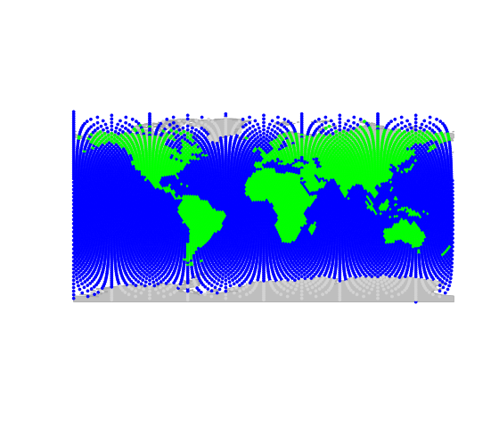
## Spherical geometry (s2) switched onIn this figure, each node is represented with a color depending on
the habitat type, either ‘sea’ (blue) or ‘land’ (green). We are going to
interface the cities data with this grid; to do so, we create a
gData object using new (see
?gData object):
cities <- new("gData", coords = cities.dat[, 1:2], data = cities.dat[, 3, drop = FALSE], gGraph.name = "worldgraph.10k")
cities##
## === gData object ===
##
## @coords: spatial coordinates of 4 nodes
## lon lat
## 1 -1 45
## 2 13 52
## 3 44 40
## ...
##
## @nodes.id: 4 nodes identifiers
## 1 2 3
## "5774" "7696" "2629"
## ...
##
## @data: 4 data
## pop
## Bordeaux 250000
## Berlin 3500000
## Baku 2000000
## ...
##
## Associated gGraph: worldgraph.10k
plot(cities, type = "both", reset = TRUE)## Spherical geometry (s2) switched off## Spherical geometry (s2) switched on
plotEdges(worldgraph.10k)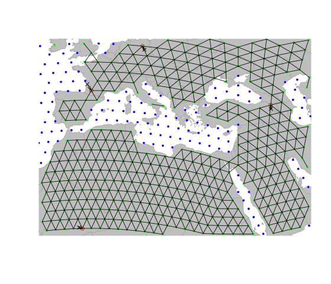
This figure illustrates the matching of original locations (black
crosses) to nodes of the grid (red circles). As we can see, an issue
occurred for Bordeaux, which has been assigned to a node in the sea (in
blue). Locations can be re-assigned to nodes with restrictions for some
node attribute values using closestNode; for instance, here
we constrain matching nodes to have an habitat value
(defined as node attribute in worldgraph.10k) equaling
land (green points):
cities <- closestNode(cities, attr.name = "habitat", attr.value = "land")
plot(cities, type = "both", reset = TRUE)## Spherical geometry (s2) switched off## Spherical geometry (s2) switched on
plotEdges(worldgraph.10k)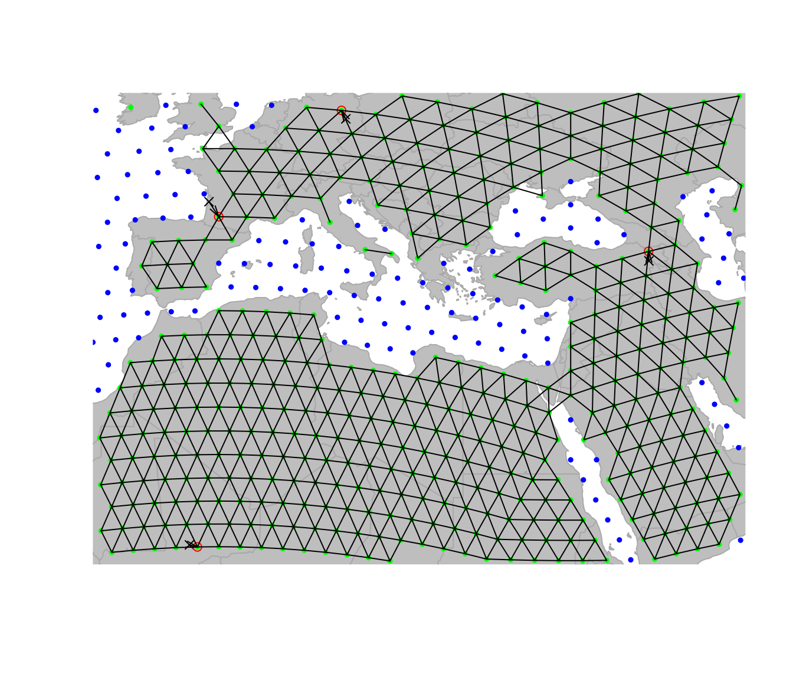
Now, all cities have been assigned to a land node of the
grid. Content of cities can be accessed via various
accessors (see ?gData). For instance, we can retrieve
original locations, assigned nodes, and stored data using:
getCoords(cities)## lon lat
## 5775 -1 45
## 7696 13 52
## 2629 44 40
## 3221 -3 16
getNodes(cities)## 5774 7696 2629 3221
## "5775" "7696" "2629" "3221"
getData(cities)## pop
## Bordeaux 250000
## Berlin 3500000
## Baku 2000000
## Timbuktu 50000More interestingly, we can now retrieve all the geographic
information contained in the underlying grid (i.e.
gGraph object) as node attributes:
getNodesAttr(cities)## habitat
## 5775 land
## 7696 land
## 2629 land
## 3221 landIn this example, the information stored in
worldgraph.10k is rather crude: habitat only
distinguishes the land from the sea.
Finding least-cost paths
One of the most useful applications of geoGraph is the
research of least-cost paths between couples of locations. This can be
achieved using the functions dijkstraFrom and
dijkstraBetween on a gData object which
contains all the locations of interest. These functions return
least-cost paths with the format gPath.
dijkstraFrom compute the paths from a given node of the
grid to all locations of the gData, while
dijkstraBetween computes the paths between pairs of
locations of the gData. Below, we illustrate the use of
dijkstraBetween to find the least-cost paths between all
pairs of cities in our example.
First, we check that all populations are connected on the grid using
isConnected:
isConnected(cities)## [1] TRUEIf not all locations are connected, connectivityPlot can
help diagnose the problem by displaying connected components in
different colors, and is available for both gGraph and
gData objects. For instance:
connectivityPlot(worldgraph.10k, edges = TRUE, seed = 1, reset = TRUE)## Spherical geometry (s2) switched off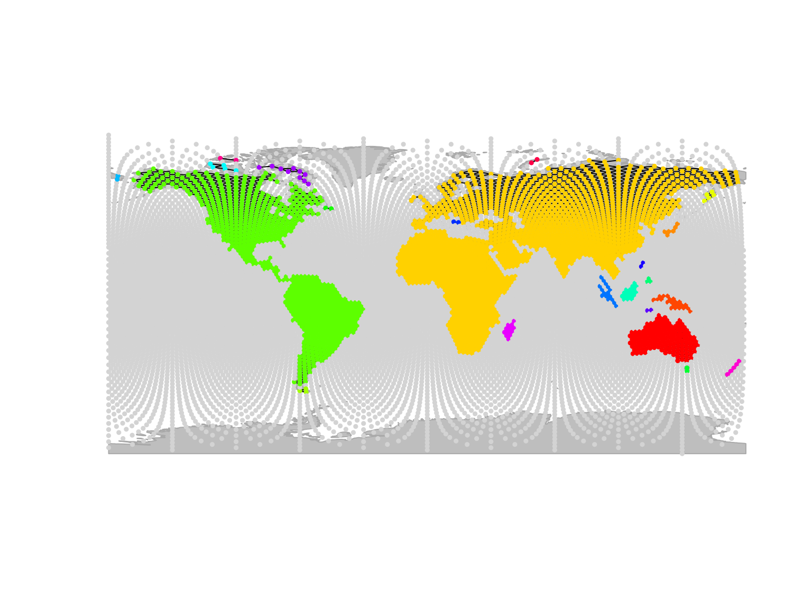
## Spherical geometry (s2) switched onSince all locations in cities are connected, we can
proceed further.
We can now compute least-cost paths between all pairs of cities using
dijkstraBetween:
cities.paths <- dijkstraBetween(cities)
cities.paths##
## === gPath object ===
##
## number of paths: 6
##
## available paths (id_origin:id_destination): 5775:7696 5775:2629 5775:3221 ...
##
## each path, accessible with [[]] has elements 'length', 'path_detail' and 'length_detail'
## x and y coordinates of all nodes are stored as an attribute 'xy'; see ?gPath for details
plot(cities, reset = TRUE)## Spherical geometry (s2) switched off## Spherical geometry (s2) switched on
plot(cities.paths)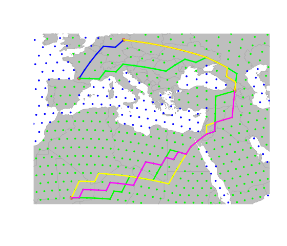
In this graph, each path is plotted with a different color, but
several paths overlap in several places. We can clearly see that all
paths go through the Caucasus mountains, which is the only land
connection between Europe and Africa in this grid. Depending on the
application, this may be a problem, since the Strait of Gibraltar is a
more likely route for traveling between these two continents. In the
next section, we show how to change local properties of a
gGraph to allow for a connection at the Strait of
Gibraltar.
Changing local properties of a gGraph
In the current version of worldgraph.10k, there is no
connection at the Strait of Gibraltar as the grid is designed to only
allow for land to land connectivity. We can visually check this by
zooming in on the area of interest and plotting the edges of the
grid:
geo.zoomin(c(-10, 2, 32, 40))## Spherical geometry (s2) switched off## Spherical geometry (s2) switched on
plotEdges(worldgraph.10k)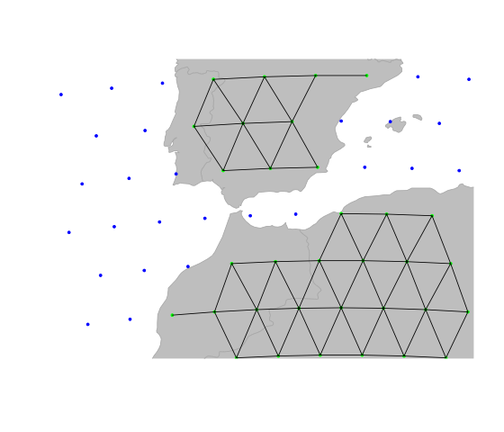
We can change this by adding a connection between the two continents,
for instance by adding a connection between the two nodes of the grid
which are closest to the Strait of Gibraltar. Adding and removing edges
from the grid of a gGraph can be achieved by
geo.add.edges and geo.remove.edges,
respectively. These functions are interactive, and require the user to
select individual nodes or a rectangular area in which edges are added
or removed. See ?geo.add.edges for more information on
these functions. For instance, we can add the above-mentioned connection
between Europe and Africa by selecting the two nodes of the grid closest
to the Strait of Gibraltar, and adding a connection between them. For
this we just run the ‘geo.add.edges’ function, and then click on the two
nodes of the grid that we want to connect (in this case, one node in
Europe and one node in Africa). After adding the edge, we can save the
new graph as a new object (note that we have to save the changes using
<-):
newGraph <- worldgraph.10k
plot(newGraph)
newGraph <- geo.add.edges(newGraph)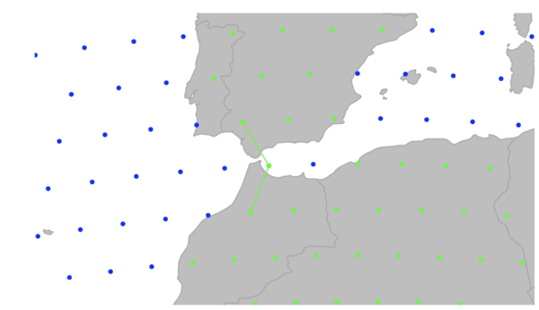
We can then assign the new graph using the setGraph
function, so that the new graph will be used for path computations. Now
when we compute least-cost paths between cities, we can see that the
path between Bordeaux and Timbuktu goes through the Strait of Gibraltar
instead of the Caucasus mountains:
cities <- setGraph(cities, "newGraph")
cities.paths <- dijkstraBetween(cities)
plot(cities, reset = TRUE)## Spherical geometry (s2) switched off## Spherical geometry (s2) switched on
plot(cities.paths)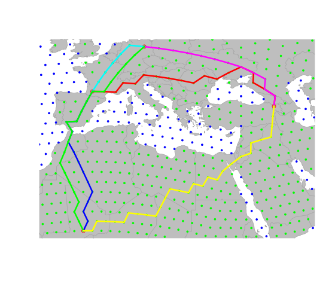
Example application using the Human Genome Diversity Panel
Here we show an application of the above-described methods to a real
dataset, the Human Genome Diversity Panel (HGDP) dataset, which contains
genetic diversity information for 52 human populations worldwide (see
?hgdp for more information on this dataset).
hgdp##
## === gData object ===
##
## @coords: spatial coordinates of 52 nodes
## lon lat
## 1 -3 59
## 2 39 44
## 3 40 61
## ...
##
## @nodes.id: 52 nodes identifiers
## 28179 11012 22532
## "26898" "11652" "22532"
## ...
##
## @data: 52 data
## Population Region Label n Latitude Longitude Genetic.Div
## 1 Orcadian EUROPE 1 15 59 -3 0.7259
## 2 Adygei EUROPE 2 17 44 39 0.7298
## 3 Russian EUROPE 3 25 61 40 0.7320
## ...
##
## Associated gGraph: worldgraph.40k
plot(hgdp, reset = TRUE)## Spherical geometry (s2) switched off## Spherical geometry (s2) switched on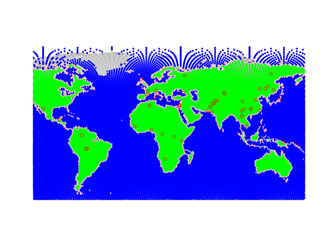
Populations of the dataset are shown by red circles, while the
underlying grid (worldgraph.40k) is represented with colors
depending on habitat (blue: sea; green: land; pink: coasts). Population
genetics predicts that genetic diversity within populations should decay
as populations are located further away from the geographic origin of
the species. Here, we verify this relationship for a theoretical origin
in Addis Ababa, Ethiopia. We shall seek all paths through landmasses to
the HGDP populations.
First, we check again that all populations are connected on the grid
using isConnected:
isConnected(hgdp)## [1] TRUESince all locations in hgdp are connected, we can
proceed further. We have to set the costs of edges in the
gGraph grid. To do so, we can choose between i) strictly
uniform costs (using dropCosts) ii) distance-based costs –
roughly uniform – (using setDistCosts) or iii)
attribute-driven costs (using setCosts).
We shall first illustrate the strictly uniform costs. After setting a
gGraph with uniform costs, we use dijkstraFrom
to find the shortest paths between Addis Ababa and the populations of
hgdp:
myGraph <- dropCosts(worldgraph.40k)
hgdp <- setGraph(hgdp, "myGraph")
addis <- cbind(38, 9)
ori <- closestNode(myGraph, addis)
paths <- dijkstraFrom(hgdp, ori)The object paths contains the identified paths, which
are stored as a list with class gPath (see
?gPath). Paths can be plotted easily:
## Spherical geometry (s2) switched off## Spherical geometry (s2) switched on
plot(paths)
points(addis[1], addis[2], pch = "x", cex = 2)
text(addis[1] + 35, addis[2], "Addis Ababa", cex = .8, font = 2)
points(hgdp, col.nodes = "black")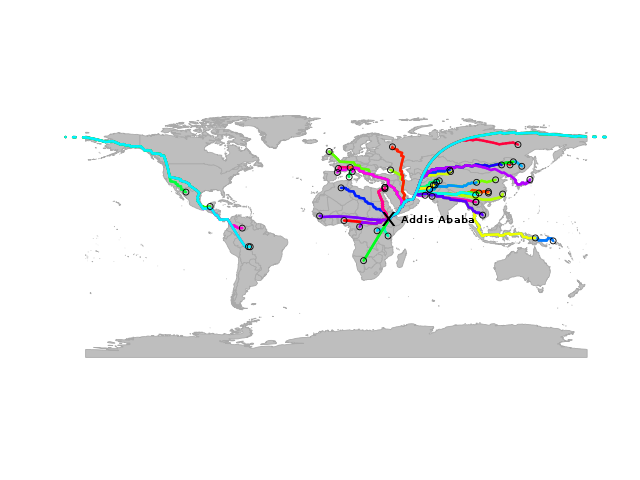
In this graph, each path is plotted with a different color, but
several paths overlap in several places. We can extract the distances
from the origin using gPath2dist, and then
examine the relationship between genetic diversity within populations
(stored in hgdp) and the distance from the origin:
div <- getData(hgdp)$"Genetic.Div"
dgeo.unif <- gPath2dist(paths)
plot(div ~ dgeo.unif, xlab = "GeoGraphic distance (arbitrary units)", ylab = "Genetic diversity")
lm.unif <- lm(div ~ dgeo.unif)
abline(lm.unif, col = "red")
summary(lm.unif)##
## Call:
## lm(formula = div ~ dgeo.unif)
##
## Residuals:
## Min 1Q Median 3Q Max
## -0.07327 -0.00660 0.00074 0.01015 0.05449
##
## Coefficients:
## Estimate Std. Error t value Pr(>|t|)
## (Intercept) 7.70e-01 4.58e-03 168.2 <2e-16 ***
## dgeo.unif -8.39e-04 5.31e-05 -15.8 <2e-16 ***
## ---
## Signif. codes: 0 '***' 0.001 '**' 0.01 '*' 0.05 '.' 0.1 ' ' 1
##
## Residual standard error: 0.0185 on 50 degrees of freedom
## Multiple R-squared: 0.833, Adjusted R-squared: 0.83
## F-statistic: 250 on 1 and 50 DF, p-value: <2e-16
title("Genetic diversity vs geographic distance \n uniform costs ")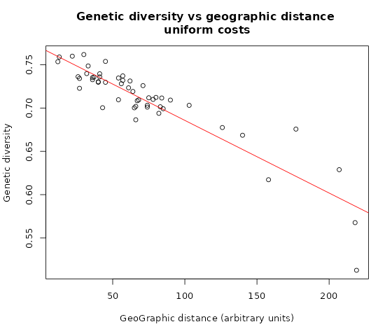
Alternatively, we can use costs based on habitat. As a toy example,
we will consider that coasts are four times more favorable for dispersal
than the rest of the landmasses. For this we simply use the
getCosts function to access the cost-rule data frame and
change the cost associated with coastal cells. After defining the new
cost rules, we set costs using this data frame with
setCosts, and then compute and plot the corresponding
shortest paths:
cost.rules <- getCosts(myGraph, res.type = "rules")
cost.rules$cost[cost.rules$habitat == "coast"] <- 0.25
myGraph <- setCosts(myGraph, attr.name = "habitat", cost.rules = cost.rules)
paths.2 <- dijkstraFrom(hgdp, ori)
plot(myGraph, col = NA, reset = TRUE)## Spherical geometry (s2) switched off## Spherical geometry (s2) switched on
plot(paths.2)
points(addis[1], addis[2], pch = "x", cex = 2)
text(addis[1] + 35, addis[2], "Addis Ababa", cex = .8, font = 2)
points(hgdp, col.nodes = "black")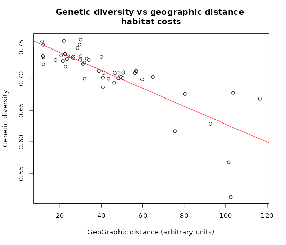
The new paths are slightly different from the previous ones. We can examine the new relationship with genetic distance:
dgeo.hab <- gPath2dist(paths.2)
plot(div ~ dgeo.hab, xlab = "GeoGraphic distance (arbitrary units)", ylab = "Genetic diversity")
lm.hab <- lm(div ~ dgeo.hab)
abline(lm.hab, col = "red")
summary(lm.hab)##
## Call:
## lm(formula = div ~ dgeo.hab)
##
## Residuals:
## Min 1Q Median 3Q Max
## -0.11183 -0.00976 0.00133 0.01216 0.06413
##
## Coefficients:
## Estimate Std. Error t value Pr(>|t|)
## (Intercept) 0.770137 0.007174 107.36 < 2e-16 ***
## dgeo.hab -0.001421 0.000145 -9.79 3.2e-13 ***
## ---
## Signif. codes: 0 '***' 0.001 '**' 0.01 '*' 0.05 '.' 0.1 ' ' 1
##
## Residual standard error: 0.0265 on 50 degrees of freedom
## Multiple R-squared: 0.657, Adjusted R-squared: 0.651
## F-statistic: 95.9 on 1 and 50 DF, p-value: 3.21e-13
title("Genetic diversity vs geographic distance \n habitat costs ")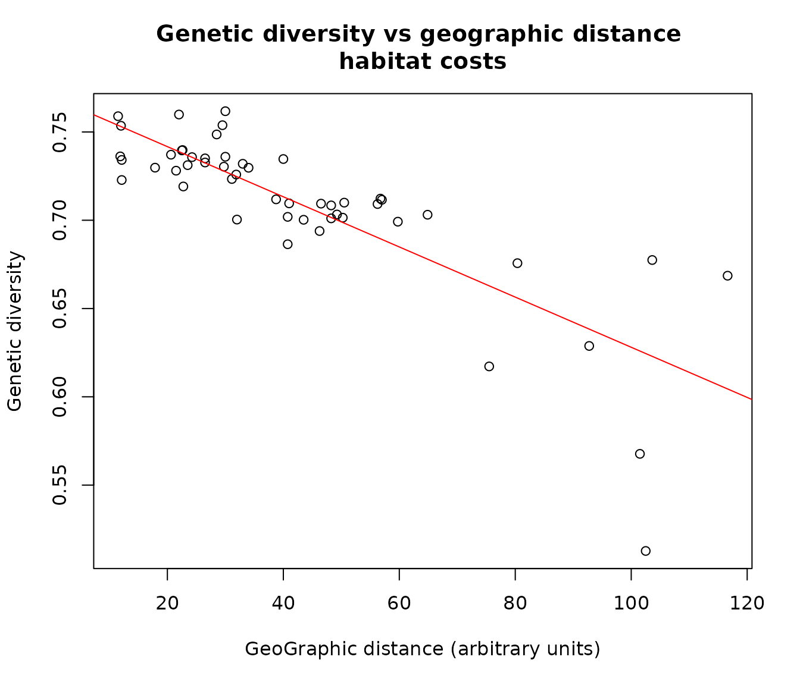
Now of course depending on the application, we may want to use
different grid resolutions, and/or more complex habitat information to
define costs of traveling through different habitats. This information
could for example be incorporated from GIS shapefiles or raster data.
Further we maybe also want to edit and customize the gGraph in more
detail. This is illustrated in the vignettes ‘Making custom grids’ and
‘Edit graphs’ (see vignette() for more information on
available vignettes).